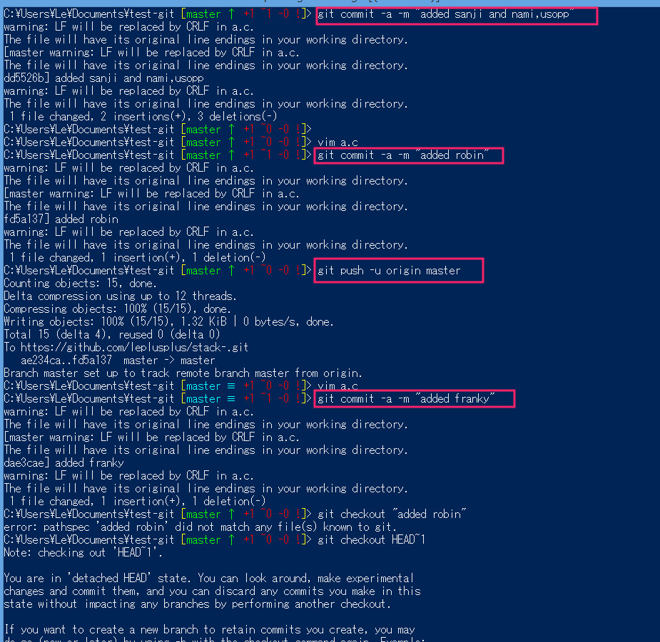

echo "# stack-" >> README.md git init git add README.md git commit -m "first commit" git remote add origin https://github.com/leplusplus/stack-.git git push -u origin master |
| 1 | echo "# stack-" >> README.md |
フォルダ内にREADME.mdというファイルを作る。 エディタ等で作っても構いません。作らなくても動きますが、誰かに怒られるかもしれません。 |
| 2 | git init | このフォルダをgitで管理するための初期設定。 隠しフォルダ .git が作られ、各種設定ファイルが作られます。 |
| 3 | git add README.md |
gitで管理するファイルをaddします。 開発途中のプログラムソースなどをaddしていくことになります。 |
| 4 | git commit -m "first commit" | git管理対象の変更点をcommitします。 現時点で管理の対象となっているのは、先にaddしたREADME.mdだけです。 |
| 5 | git remote add origin https://github.com/leplusplus/stack-.git | 自分のパソコンの現在のフォルダを、github.com上のフォルダと関連付けます。 |
| 7 | git push -u origin master | git管理下にあるcommitをmasterへpushします。 |
git add *.c git commit -m "hoge" git push -u origin master
git commit -a -m "hoge" git push -u origin masterでよいように思う。 